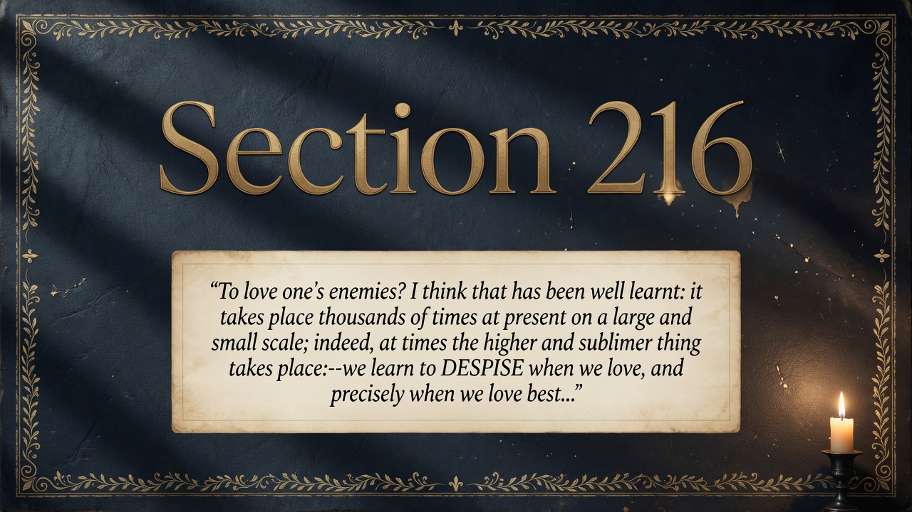
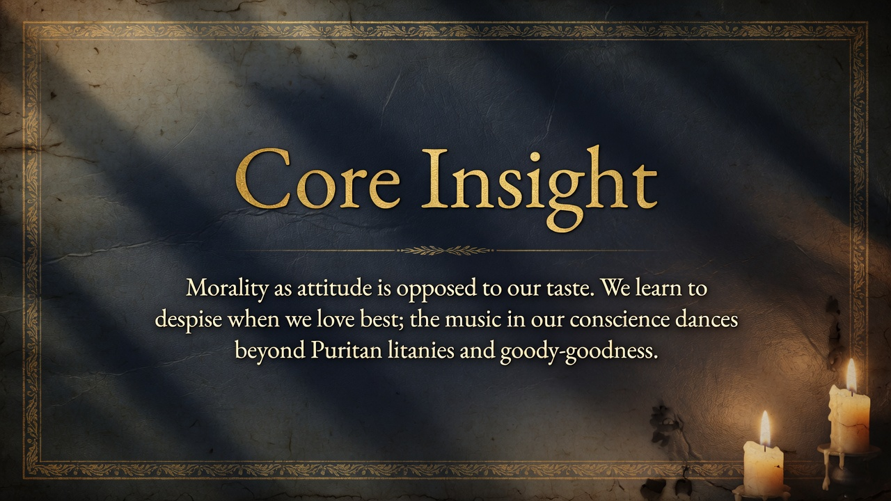
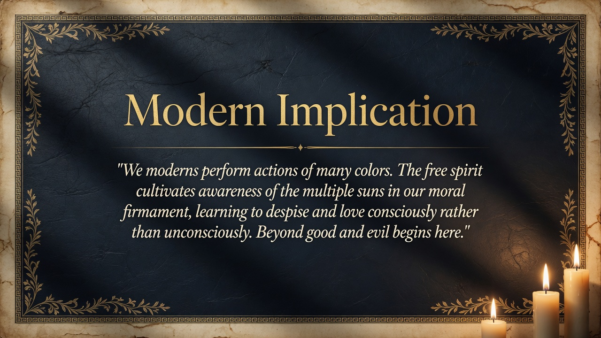

We learned to love enemies in a twisted way—we often despise most deeply the people we once loved best. Intimacy turns into contempt when disappointment hits. Modern relationships recycle love into bitterness.
The highest contemporary form of love includes a secret contempt for the loved one.
The highest contemporary form of love includes a secret contempt for the loved one. genuine morality has become a matter of inward rhythm rather than declared attitude or sermon. Unconscious, tasteful, and musical — it refuses the pomp of virtue.
In “Our Virtues,” this sharpens the portrait of modern subtlety. After the pigtail of good conscience and the motley moralities of 215, Nietzsche isolates the refined, almost aesthetic character of whatever virtue remains: not preached, not posed, but danced.
Our culture is saturated with ostentatious moral performance — virtue signaling, public cancellations, corporate statements of values. Section 216 suggests that the most vital ethical life today may be precisely what refuses display: a private music of conscience that can include hard truths (contempt within love) without fanfare. The free spirit practices this secrecy and taste, letting actions and inner dance speak where sermons would falsify. To recover the capacity for genuine, unadvertised feeling — including the difficult mixture of love and contempt — is itself an aristocratic achievement in an age addicted to moral theater.


